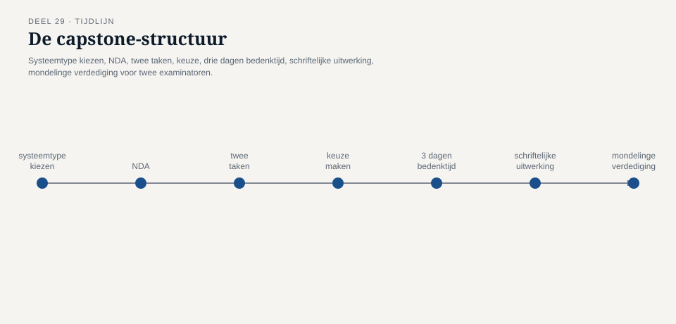
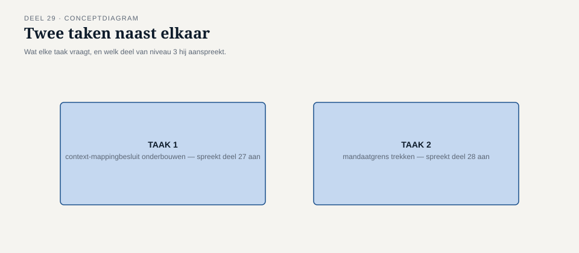
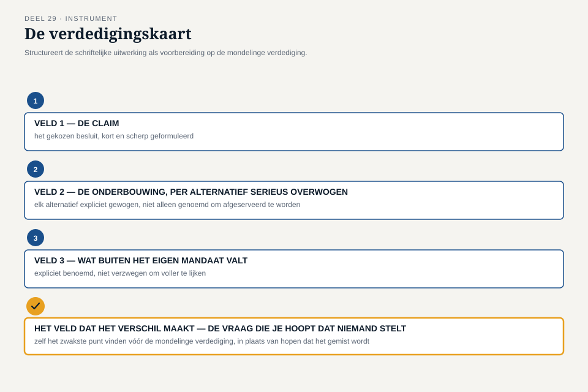

Deel 29 — CPSA-A-examentraining: de assignment-vorm oefenen
Slidedeck · Ductus-cursus Domain-Driven Design · niveau 3 (expert) · deel 29 van 30 · 27 slides
Slide 1 — Titel
Domain-Driven Design — deel 29 CPSA-A-examentraining: de assignment-vorm oefenen Niveau 3: expert
Slide 2 — Waar we staan
Deel 10 en 22: module-toetsvorm. Dit deel: de échte capstone-vorm. Niet inhoud — vorm.
Slide 3 — De echte capstone
Systeemtype kiezen. NDA. Twee taken. Kiezen. Drie dagen. Verdedigen — voor twee examinatoren.
Slide 4 —

De capstone-structuur als tijdlijn
Slide 5 — Waarom deze vorm
Geen ruggespraak vooraf. Kort genoeg voor vakmanschap, lang genoeg tegen improvisatie.
Slide 6 — Wat dit deel oplevert
- De capstone-structuur begrijpen
- Onder tijdsdruk kiezen
- De verdedigingskaart
- Verdedigen voor twee rollen
Slide 7 — De enveloppe
Foppe, zonder inleiding. Een geheimhoudingsverklaring. “De klok begint nu.”
Slide 8 — Het systeemtype
Twee historisch gegroeide deelnemersmodellen, na fusie, onder een wettelijke deadline.
Slide 9 — Taak 1
Ontwerp en verdedig een context-mappingbesluit. Minstens drie botsingspunten.
Slide 10 — Taak 2
Ontwerp een governance-mechanisme tegen taal-drift, over de eerste twee jaar.
Slide 11 —

De twee taken naast elkaar
Slide 12 — De keuze zelf telt al mee
Niet welke taak “beter” is. Of de keuze bewust is, en waarom.
Slide 13 — Daan kiest
Taak 1 — vertrouwd terrein. Risico: te veel op eigen dossier leunen. Hardop benoemd, vóór hij begint.
Slide 14 — Twee examinatoren
Methodologie. Communicatie. Zoals de module: 20 punten, 10 punten.
Slide 15 — De methodologie-examinator
Klopt de analyse? Zijn alternatieven serieus overwogen? Is het mandaat scherp?
Slide 16 — De communicatie-examinator
Kan de kandidaat het uitleggen aan iemand die de opdracht niet heeft zien ontstaan?
Slide 17 —

De twee rollen, elk met een voorbeeldvraag
Slide 18 — De verdedigingskaart, veld 1
De claim — scherp, herhaalbaar door een buitenstaander
Slide 19 — De verdedigingskaart, veld 2
Elk alternatief serieus gewogen — niet genoemd om te worden afgeserveerd
Slide 20 — De verdedigingskaart, veld 3
Wat buiten je mandaat valt — de oordeelstoets, toegepast
Slide 21 — Het laatste veld
De vraag die je hoopt dat niemand stelt. Wat is je eerlijke antwoord?
Slide 22 —

De verdedigingskaart, vier velden
Slide 23 — Vera vraagt door
“Dat is een uitkomstvraag-argument. Hoort dat hier thuis?”
Slide 24 — Daan corrigeert zichzelf
“U heeft gelijk — ik vermeng twee dingen. Laat me splitsen.”
Slide 25 — Karsten, onvoorzien
“Leg een anti-corruption layer uit zonder het woord ‘model.’”
Slide 26 —

De verdediging als tijdlijn — claim, doorvraag, correctie, onvoorziene vraag
Slide 27 — Vooruit
Dit deel: de vorm, gecomprimeerd, generiek. Deel 30: het volledige dossier, vier rollen, twee dagdelen — de masterproef.